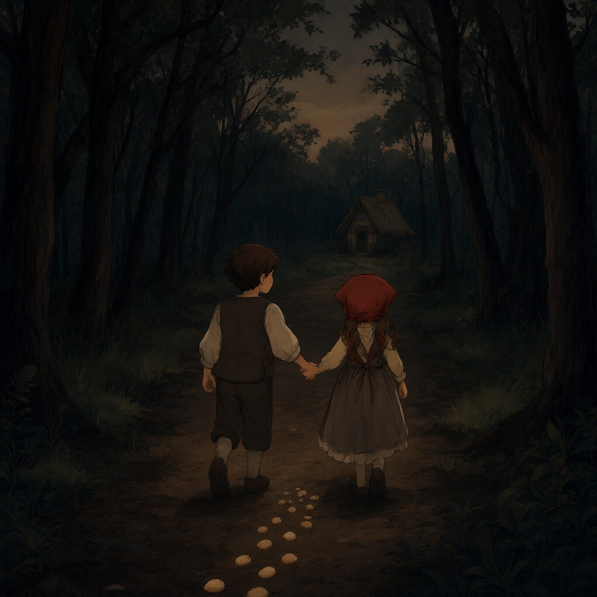
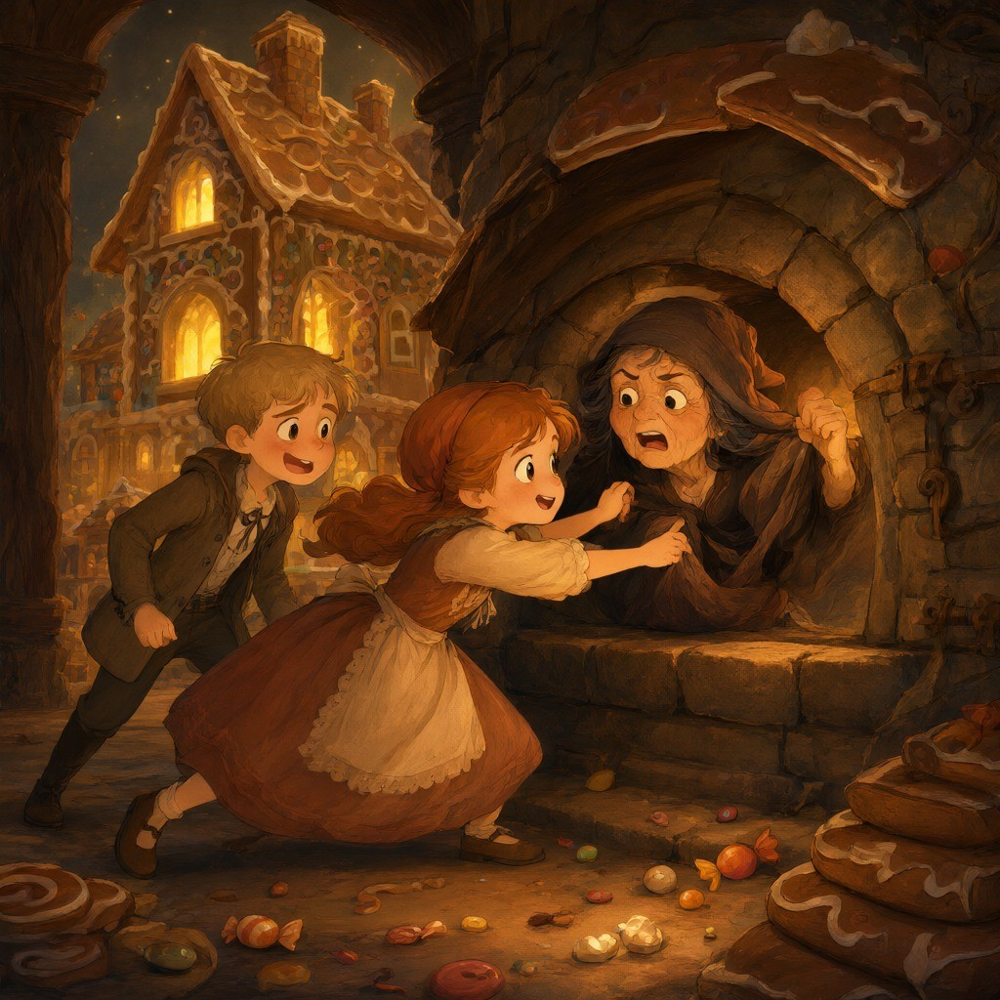

Un humilde leñador vivía con sus dos hijos y su nueva esposa en un bosque a las afueras del pueblo. El niño se llamaba Hansel y la niña, Gretel. Todos los días el leñador trabajaba sin descanso. Sin embargo, llegó un momento en el que no le alcanzaba para el sustento de su familia. Preocupado, el leñador le dijo a su esposa una noche: —No tengo lo suficiente para comprar pan y mantequilla, ¿qué haré para alimentarnos y alimentar a los niños? —Esto es lo que haremos —respondió la mujer—, mañana por la mañana, llevaré a Hansel y a Gretel a la entrada del pueblo y los dejaré ahí; una familia acaudalada se apiadará de ellos y vivirán una vida muy cómoda y feliz. Entonces, solo tendremos que preocuparnos por nosotros. —Jamás lo permitiré —dijo el hombre—. ¿Cómo crees que puedo abandonar a mis hijos? —Debes hacerlo —refutó la mujer—. Si no lo haces, todos vamos a tener hambre. Los dos niños, incapaces de dormir por el hambre, habían escuchado la conversación. Llorando, Gretel le dijo a su hermano: —Hansel, no puedo creer lo que hemos escuchado. —No te preocupes Gretel —respondió Hansel con voz tranquila—. Tengo una idea. Al amanecer, la malvada mujer despertó a sus dos hijastros gritando: —¡Levántense ya, no sean flojos! Vamos al mercado a comprar alimentos. Luego, les dio a los pequeños un trozo de pan y les dijo: —Este es el almuerzo; no se lo coman enseguida, porque no hay más. Gretel guardó el pan en su delantal. Hansel puso el suyo en el bolsillo de su abrigo y lo desmenuzó en secreto, con cada paso que daba, arrojaba las migas de pan en el camino. —Espérenme aquí —dijo la madrastra cuando se encontraban en medio del bosque—, ya regreso. Sin embargo, pasaron las horas sin que volvieran a saber de la mujer. Tan grande era su maldad que los había abandonado sin tomarse la molestia de dejarlos en el pueblo. Hansel y Gretel se sentaron en la oscuridad y compartieron el pedazo de pan de Gretel. Pronto, los dos niños se quedaron dormidos. Cuando despertaron en medio de la noche, Gretel comenzó a llorar y dijo: —¿Cómo encontraremos el camino a casa? Hansel la consoló diciéndole: —Espera a que salga la luna, luego seguiremos mi camino de migas de pan hasta la casa. Sin embargo, cuando salió la luna no pudieron seguir el camino porque las aves del bosque se habían comido las migas. Los dos pequeños se encontraban perdidos en el bosque. Después de muchos días y noches de vagar por el bosque, los niños hallaron una casita que estaba hecha con pan de jengibre. —¡Comamos! —dijo Hansel—, mordisqueando el techo mientras Gretel probaba parte de la ventana. De repente, la puerta se abrió y una anciana salió cojeando apoyada en un bastón. Hansel y Gretel estaban tan asustados que dejaron caer los pedazos de jengibre que habían estado comiendo. La anciana sonrió muy amablemente y les dijo: —Soy una viejita muy solitaria, me siento muy feliz de verlos. La anciana los condujo al interior de su casa, cocinándoles una maravillosa cena. Luego, los llevó a dos lindas camitas, y Hansel y Gretel durmieron cómodamente. Pero la amable anciana era en realidad una bruja que usaba su casa para atrapar a los niños y convertirlos en muñecos de jengibre. Temprano en la mañana, la bruja encerró a Hansel en una jaula mientras dormía. Luego despertó a Gretel y le dijo: —Levántate floja, y ayúdame a preparar el horno. ¡Voy a convertir a tu hermano en un muñeco de jengibre! Gretel lloró al escuchar las palabras de la bruja, pero no tuvo más remedio que hacer lo que le ordenaba. Cuando la niña encendió el fuego del horno, la bruja le dio una nueva orden: —Métete adentro y mira si el horno está lo suficientemente caliente. En el momento que Gretel estuviera dentro, la bruja tenía la intención de cerrar el horno y convertir a la pobre niña en una muñeca de jengibre. Pero Gretel conocía las crueles intenciones de la bruja y respondió: — No sé qué hacer, ¿cómo entro al horno? —La puerta es lo suficientemente grande, mírame entrar —respondió la bruja muy molesta. Luego, abrió la puerta del horno mágico y se metió adentro. Gretel instantáneamente cerró la puerta. Una vez dentro del horno, ¡la bruja se convirtió en una muñeca de jengibre! Gretel liberó a Hansel de su prisión. A la salida de la casa de la bruja, Hansel tropezó con un baúl lleno de joyas. Los dos niños se llenaron los bolsillos de oro, perlas y diamantes. Felices, recorrieron el bosque hasta que vieron a su padre en la distancia. El angustiado hombre abrazó a sus hijos con fuerza, todos los días salía a buscarlos. Tanta era su pena que no quiso volver a saber de su malvada esposa. Hansel sacó las joyas de sus bolsillos, y dijo con emoción: —Mira papá, nunca tendrás que volver a cortar leña. Fue así que esta pequeña familia vivió feliz para siempre.

Versión escrita por Paola Artmann
Volver al inicio